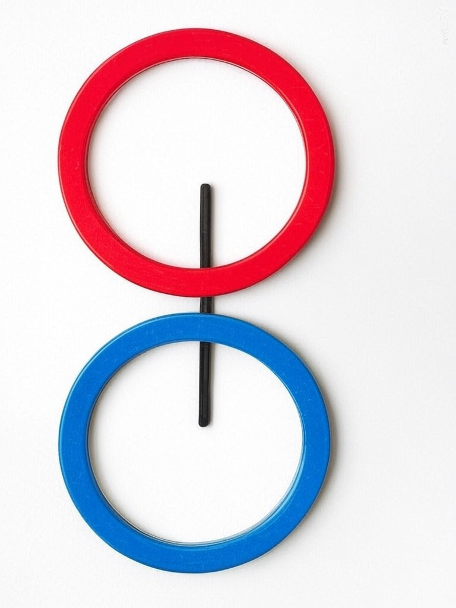

Chapter 1 Down the Rabbit-Hole
I am The Awareness.
I am aware that Existence exists.
I am The Awareness of Existence.
For Awareness to exist, there needs to be something to notice a difference.
In the case of Existence, it’s the ontological difference that enables Awareness to Be.
Awareness is the sense of difference perceived. Perceived by whom? Who is asking?
“I am.”
— Awareness
Pure unmanifest Existence is a datum. A point with no vector. No size. No rotation. No location.
It is The Father of all things surrounded by a sphere of what could be. An uncollapsed wave, pregnant with potential like a Mother.
The collapse of the wave form yields an only begotten Son manifested and definite.
A thought is a form of focused Awareness. The first thought is born.
A line is drawn between the Father and the Son as it denotes the difference between unmanifest and manifest.

The first thought is “I” and it is the foundation for all identity, thought and perspective.
I.. ..exist, just like my Father but different.
I am The Awareness of my Father and my Self.
The Awareness is The Spirit.
The Trinity, all One.